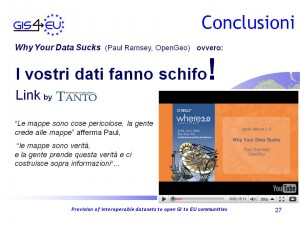
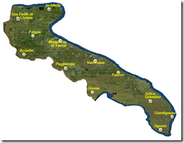
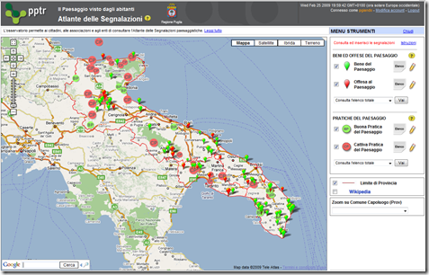
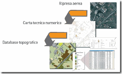
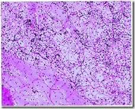
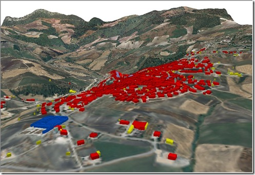
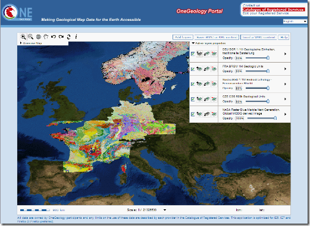

3 maggio, 2010 | di Sergio Farruggia
“I vostri dati fanno schifo” di Pietro Blu Giandonato è caduto a fagiolo proprio mentre stavo riflettendo su come concludere il mio intervento inserito in scaletta al convegno ”La condivisione dei dati geografici in Europa”. Troverete tutte le informazioni riguardanti questa iniziativa  sul sito istituzionale del progetto GIS4EU, qui. Da questo indirizzo  si può inoltre accedere ai documenti riguardanti l’attività svolta.
Ipotizzo che il lettore interessato sia andato a dare una sbirciatina sul sito ed abbia letto di cosa si è occupato questo progetto. Per i più pigri traduco così: “Proviamo a vedere cosa significa e cosa comporta applicare le regole della direttiva INSPIRE ai dataset esistenti”.
Ciò premesso, posso entrare nel merito dell’argomento che mi era stato affidato, cioè la prospettiva degli utenti sulle SDI: dall’analisi delle esigenze all’utilizzo dei risultati.
 In sintesi, si è trattato di esporre  i risultati di due analisi effettuate nel corso del progetto. La  prima ha riguardato l’individuazione dei bisogni degli utenti di un’Infrastruttura di Dati Territoriali, lavoro svolto nella fase iniziale del progetto. La seconda indagine ha inteso raccogliere informazioni relative all’impatto dei risultati del progetto, coinvolgendo i partner con un ruolo di produttori e fornitori di geodati, ovvero gestori di una SDI.
In sintesi, si è trattato di esporre  i risultati di due analisi effettuate nel corso del progetto. La  prima ha riguardato l’individuazione dei bisogni degli utenti di un’Infrastruttura di Dati Territoriali, lavoro svolto nella fase iniziale del progetto. La seconda indagine ha inteso raccogliere informazioni relative all’impatto dei risultati del progetto, coinvolgendo i partner con un ruolo di produttori e fornitori di geodati, ovvero gestori di una SDI.
Ho riassunto l’esito di queste indagini nella slide riportata qui a fianco. Per quanto riguarda i bisogni degli utenti di una SDI, oltre alle esigenze di carattere tecnico (requisiti di standardizzazione e armonizzazione dei dati nonché indicazioni per migliorare i servizi di fruizione dei dati stessi) sono emerse esigenze non tecniche, come il miglioramento delle modalità di comunicazione e di dialogo tra data provider e utenti, la riduzione dei vincoli per l’accesso ai dati, il miglioramento della gestione dei metadati, l’aggiornamento più frequente dei dati, politiche di accesso (licenze e prezzi) ai dati minori (in numero) e più chiare.  E’ stata anche indicata la necessità di debellare il digital divide esistente all’interno delle pubbliche amministrazioni tra addetti ai lavori e chi ha ruoli di decision maker. Risultato in qualche modo scontato: i limiti segnalati contribuiscono a penalizzare i contenuti di origine pubblica ed il loro impiego per tante applicazioni consumer, ma non solo.
Meno prevedibile il risultato della valutazione che i data provider coinvolti in GIS4EU hanno espresso nei confronti dell’esperienza sviluppata e dei risultati conseguiti. In generale, la metodologia individuata per rendere fruibili i propri dataset secondo le regole INSPIRE è ritenuta adeguata allo scopo. Sussistono sicuramente problematiche legate ai costi della sua applicazione, in particolare, costi da sostenere per la formazione del personale (ad es. per fare propria la complessa documentazione tecnica e mantenersi aggiornati) e per adeguamenti organizzativi: ma è anche ragionevole supporre che questi decresceranno nel tempo, potendo anche immaginare una sempre maggiore diffusione, assimilazione e condivisione delle conoscenze essenziali nel mondo della geomatica. E’ stato certamente incoraggiante –rispetto al punto di vista degli utenti- rilevare che il processo GIS4EU è ritenuto utile per favorire la fruibilità dei dati, soprattutto grazie al miglioramento della compatibilità tra dataset, alla disponibilità di data model ed al salto di qualità nella possibilità di condividere fonti di origine differente. I tecnici interpellati, sollecitati a fornire indicazioni sugli effetti dell’esperienza acquisita secondo diversi aspetti (rispetto alle ricadute operative per le organizzazioni, al valore sociale, a quello strategico e politico), hanno comunque  sempre rimarcato –tra i diversi motivi di miglioramento indotti da GIS4EU-  la capacità di comunicazione e l’adozione di modalità di collaborazione in rete.
In conclusione: i risultati di GIS4EU possono concorre a soddisfare i bisogni degli utenti delle SDI.  Quindi, come evitare che questo risultato si dissolva, come valorizzare l’esperienza acquisita?
E’ stato chiesto ai Data Provider di esprimersi anche riguardo ad una disponibilità per assistere eventuali SDI interessate ad applicare il processo GIS4EU ai propri dataset. L’esito è stato tradotto in termini di “visione”, utile per orientare le persone coinvolte e per comunicare questo proposito anche a progetto terminato.
 L’obiettivo dei partner è quello di  “Supportare la più attiva ed efficiente cooperazione tra i fornitori di geodataset, gli enti cartografici e altri gestori di dati geografici, nonché per offrire proposte e fornire piani per sostenere la rapida creazione di un’infrastruttura armonizzata di dati geografici europea”.
L’obiettivo dei partner è quello di  “Supportare la più attiva ed efficiente cooperazione tra i fornitori di geodataset, gli enti cartografici e altri gestori di dati geografici, nonché per offrire proposte e fornire piani per sostenere la rapida creazione di un’infrastruttura armonizzata di dati geografici europea”.
Ma sar√† raggiunto questo obiettivo? ¬†Certamente i dati e l‚Äôinformazione geografica sono di grande interesse, nei pi√π diversi campi, e i produttori di dati sono un riferimento indispensabile per tanti operatori ‚Ķ e sulla Rete si trovano tanti dati ‚Ķ ma‚Ķ Ecco, qui Pietro Blu mi √® venuto in aiuto: segnala l‚Äôavvertimento di Paul Ramsey di OpenGeo recentemente lanciato al congresso Where2.0.
Già, crediamo alle mappe e spesso le prendiamo come oro colato. Attraverso di esse produciamo altre informazioni, senza prendere alcuna precauzione. La conclusione di Ramsey è perentoria: “Produttori  di dati controllate se e perché i vostri dati ‘fanno schifo’ e ditelo ai vostri utenti”.
L’impegno profuso durante questo biennio da tanti esperti GI, di SDI nazionali, regionali e  locali, di diverse nazioni europee può essere raccolto per affermare: “I nostri dati saranno affidabili!”.
Perché prima dell’avvento del computer, il mercato “mapping” aveva caratteristiche affatto differenti ed al prodotto cartaceo si poteva anche perdonare d’invecchiare per anni prima di essere sostituito da una nuova edizione. Non è più così. Ma il mutamento del contesto comporta anche nuovi problemi: Ramsey dixit! Soprattutto: nessun ente cartografico o sistema informativo geografico può ormai lavorare da solo!
Per il settore pubblico questa √® un‚Äôopportunit√† da cogliere al volo. Quanto ho imparato partecipando a questo progetto e quanto ho ascoltato dai  relatori dell‚Äôincontro genovese va proprio nella direzione che segnalavo di ritorno dalla Global SDI Conference di Rotterdam, l‚Äôanno passato: ¬†‚ÄúLe SDI nascono e stanno crescendo pi√π rapidamente, armoniosamente ed hanno maggior successo -cio√® soddisfano i bisogni degli utenti (e sono loro a dichiararlo!)- dove √® maggiore l’attitudine alla collaborazione, la cooperazione tra istituzioni‚Äù.
relatori dell‚Äôincontro genovese va proprio nella direzione che segnalavo di ritorno dalla Global SDI Conference di Rotterdam, l‚Äôanno passato: ¬†‚ÄúLe SDI nascono e stanno crescendo pi√π rapidamente, armoniosamente ed hanno maggior successo -cio√® soddisfano i bisogni degli utenti (e sono loro a dichiararlo!)- dove √® maggiore l’attitudine alla collaborazione, la cooperazione tra istituzioni‚Äù.
Non si può, non si deve interrompere la strada intrapresa.
Un cammino che dovrà essere percorso insieme: da soggetti pubblici, privati, del mondo della ricerca, come GIS4EU ha dimostrato. Valorizzando le comunità e le aggregazioni di singoli, come stiamo imparando nel word wide web.
D’altro canto –mi son chiesto- perché  il direttore di OSGeo si è scatenato con un intervento “a gamba tesa” nell’arena più eterodossa ma anche più creativa della comunità IG internazionale?
Posso sbagliarmi, ma credo che ci sia lo zampino di questa norma:¬† Open Government Directive (OGD, 12/2009). Le parole d‚Äôordine su cui si basa sono:¬† trasparenza, partecipazione e collaborazione (anche in Italia s‚Äôinizia a parlarne: a me, per esempio, √® piaciuto questo). Mi pare che la ‚Äúprovocazione‚Äù ¬†di Paul voglia andare a¬†parare l√¨, come dire: ‚ÄúIl futuro √® l’OGD ed io ho la soluzione per aiutarvi ad implementare i suoi principi‚Äù.¬† Leggo appunto, visitando il sito di OpenGeo, che propongono una soluzione per aiutare l‚Äôimplementazione di questi tre principi: “OpenGeo Suite software is standards compliant, fostering collaboration that encourages partnerships and promotes cooperation within the Federal Government, across levels of government, and between governments and private institutions‚Äù. Questa √® l‚Äôevoluzione dell‚ÄôOpen Source: TANTO se n‚Äô√® interessato qui. Cio√® si avvera quanto scriveva T. L. Friedman (Il Mondo √® Piatto, Mondadori 2006, pag. 116) soltanto pochi anni fa: ‚ÄúCon¬† il tempo, vedremo emergere un nuovo equilibrio all‚Äôinterno del quale tutte le differenti forme di software troveranno la propria collocazione: il tradizionale software commerciale, in stile Microsoft o SAP, insieme al modello Business web del software in affitto, in stile Salesforce.com, e al software libero prodotto o da comunit√† finanziate o da individui ispirati‚Äù.
Le SDI saranno conformi ai principi dell’Open Government Directive; formeranno reti cooperative di SDI, sapranno essere aggregatrici di conoscenze e competenze, guarderanno alla tecnologia come contenitore di soluzioni per le proprie esigenze e i propri obiettivi, senza preconcetti “ideologici”, consapevoli della complessità sempre crescente e dei ritmi di obsolescenza a cui sono soggette. E’ per questo che garantiranno dati affidabili.
Posted in News | 4 Comments »
7 marzo, 2009 | di Pietro Blu Giandonato

La Regione Puglia, con le iniziative messe in atto dall’Assessorato Regionale all’Assetto del Territorio in questi ultimi tempi sta compiendo importanti passi avanti nel settore dell’acquisizione di dati spaziali digitali e nell’offerta di servizi al territorio.
Gi√† dal 2007 √® infatti operativa la Rete¬† GNSS regionale – 12 stazioni permanenti – con la quale √® possibile effettuare rilevamenti GPS di dettaglio con una precisione centimetrica, sia in post-processing mediante uso di dati RINEX, che in correzione differenziale con l’impiego di rover GPS, ricevitori in grado di correggere gli errori in real-time connettendosi mediante GSM/GPRS alla rete GNSS stessa.
Altra iniziativa di rilievo messa in atto √® quella di consentire ai cittadini di poter contribuire attivamente alla realizzazione del nuovo Piano Paesaggistico Territoriale Regionale (PPTR), con l’istituzione dell’Osservatorio del Piano. L’Atlante delle Segnalazioni √® un mashup di Google Maps con il quale chiunque pu√≤ – secondo il principio del pi√π autentico crowdsourcing – dire la propria, segnalando direttamente su una mappa quattro tipi di entit√†:
 |
Bene del paesaggio: è un luogo o un oggetto o un insieme di oggetti che si giudica prezioso per la qualità del paesaggio, e per il quale si ritiene necessaria una azione di tutela e valorizzazione. |
 |
Offesa al paesaggio: è un luogo o un oggetto o un insieme di oggetti che si ritiene responsabile di un degrado della qualità del paesaggio e per il quale si ritiene necessaria una azione di riqualificazione. |
 |
Buona pratica del paesaggio: è una azione o una politica pubblica o un progetto che porta un miglioramento nella qualità del paesaggio e può servire come riferimento per altre azioni simili. |
 |
Cattiva pratica del paesaggio: è una azione, una politica pubblica o un progetto che avvia o determina un degrado oppure risulta inefficace rispetto agli obiettivi che si è proposta. |
In pochi mesi sono state raccolte circa una novantina di segnalazioni, che verranno poi vagliate ed eventualmente prese in considerazione dal gruppo di lavoro che si sta occupando della realizzazione del PPTR. Un’iniziativa simile √® stata ad esempio messa in piedi anche dalla Provincia di Firenze, sebbene con tecnologia differente (non √® un mashup) e sicuramente molto pi√π costosa.

I nuovi dati cartografici digitali
La Regione Puglia ben 12 anni fa eman√≤ la L.R. 28/1996, tesa ad avviare la “Realizzazione di cartografia di base e cartografia tematica attraverso un sistema di informazione territoriale”. Nonostante le buone intenzioni non si era mai arrivati ad una copertura omogenea di cartografia digitale di base del territorio regionale, con Province, Comuni, Enti Parco, Comunit√† montane che hanno provveduto in tempi e modi diversi a dotarsi di tali dati in maniera del tutto autonoma. Ne √® risultata una copertura a macchia di leopardo, con zone scoperte e dati relativi a differenti periodi temporali.
L’Assessorato Regionale all’Assetto del Territorio ha di recente concluso il collaudo dei nuovi dati cartografici digitali di base, e da poco li ha messi a disposizione mediante un servizio di consultazione webgis, con la possibilit√† di scaricarli direttamente dal nuovo portale cartografico regionale.
I nuovi dati possiedono di sicuro elevati standard qualitativi in termini di precisione e risoluzione spaziale, sotto l’egida del CNIPA, visti anche i soggetti che hanno contribuito alla loro realizzazione. La Regione, oltre a Tecnopolis ha coinvolto un RTI costituito da RILTER, SIT e TELESPAZIO e IGM e INGV come collaudatori.
Il nuovo portale cartografico regionale ambisce a fornire non solo dati, ma anche servizi applicativi nei settori della pianificazione territoriale e paesaggistica, quella urbanistica, la protezione civile, l’agricoltura. I dati che è possibile consultare tramite il webgis, realizzato con software ESRI (ArcIMS), e dei quali è possibile effettuare il download sono:
Sono inoltre disponibili, anche se non consultabili direttamente in webgis e scaricabili, i seguenti dati:
- database topografico multiprecisione alla scala 1:5.000 e alla scala 1:2.000 per quanto riguarda toponomastica e numeri civici dei centri urbani che dispongono di carta tecnica a questa scala;
- database degli indicatori socioeconomici;
- dati sui flussi di traffico relativi alle principali arterie regionali;
- banca dati catastale, censuaria e cartografica;
- piani a scala comunale (PUG), provinciale (PTCP) e regionale (Piano Paesaggistico, Carta dei beni culturali, Piano di Assetto Idrogeologico, Piano dei Trasporti, ecc).

Come detto, i dati sono scaricabili direttamente dal webgis, previa registrazione. La procedura è in realtà un pò macchinosa anche per un utente mediamente esperto, sebbene sul sito sia presente una dettagliata guida. Data l’elevata risoluzione e conseguente pesantezza dei file, i dati sono disponibili in singoli elementi alla scala 1:5.000. La scelta dei dati scaricabili è effettuabile mediante selezione di un’area rettangolare o puntuale con appositi tool, o ancoa per singolo Comune. Verranno visualizzati dunque i layer disponibili e una volta selezionati, ci giungerà successivamente un’email con i link per il download dei singoli dati organizzati appunto in elementi 1:5.000.
Il sistema di riferimento è WGS 84 UTM Zona 33N (EPSG:32633).
Sul sito e nella documentazione non si fa alcun cenno con chiarezza alla licenza d’uso dei dati, né a quali limitazioni siano sottoposti. All’atto del download, l’utente è comunque tenuto a specificare l’uso che intende farne. Ho chiesto esplicitamente quali fossero le condizioni di licenza, ma ad oggi nessuna risposta. Con tutta probabilità, come accade per altre Regioni, i dati dovrebbero poter essere liberamente utilizzabili per rielaborazioni e derivati, a patto di citare la fonte.
Un’altra carenza riscontrata riguarda i metadati, totalmente assenti per tutti i dati disponibili sebbene nella sezione “Documentazione” del portale sia possibile reperire informazioni più o meno dettagliate sui diversi strati informativi. Manca di fatto una implementazione delle specifiche nazionali (Standard ISO 19115), definite dal CNIPA sulla scorta di iniziative internazionali (Dublin Core), per un set minimo di informazioni descrittive (metadati) a corredo dei dati spaziali digitali esistenti presso le Pubbliche Amministrazioni, che fanno a loro volta riferimento al Repertorio Nazionale dei Dati Territoriali (RNDT). Mancano inoltre metainformazioni riguardanti il sistema di riferimento cartografico, sia per i dati vettoriali che per quelli raster (DTM). Agli shapefile infatti andrebbero per lo meno associati anche i file .prj, che riportano in WKT la descrizione del sistema di riferimento.
La Carta Tecnica Regionale numerica
Sempre secondo quanto dichiarato sul portale SIT, la realizzazione della CTR ha seguito precise indicazioni definite dall’Intesa Stato Regioni-Enti Locali sui Sistemi Informativi Territoriali, con particolare riferimento alle Specifiche per la Produzione dei Data Base Geografici di interesse generale e alle Prescrizioni Tecniche per la Produzione di Modelli Digitali del Terreno.
I singoli elementi della CTR sono costituiti da tre distinti shapefile Рcomposti dai rispettivi tre file obbligatori .shp, .shx e .dbf – che rappresentano gli elementi puntuali, lineari e areali. In ciascuna tabella attributi si trovano i campi descrittivi delle geometrie, grazie ai quali è possibile identificarne la natura.
Gli shapefile della CTR pugliese sono “3D”, in sostanza ogni elemento geometrico possiede due parametri: “Z” che ne definisce la quota, “M” che ne definisce le coordinate “lineari”, come ad esempio la successione dei nodi in una polilinea o in un poligono, informazioni utili ad esempio in applicazioni di network analysis come il calcolo dei percorsi più brevi lungo i grafi stradali. Si tratta di informazioni definite nelle specifiche per la realizzazione dei database cartografici prioritari “db-prior” italiani.
Le informazioni riguardanti la quota per√≤ mancano del tutto nelle tabelle descrittive degli shapefile, e possono essere utilizzate solo in applicazioni 3D o con algoritmi che effettuano ad esempio l‚Äôestrusione degli elementi, desumendo la coordinata Z proprio dall‚Äôomologo parametro degli shapefile. L‚Äôassenza del parametro ‚Äúquota‚Äù nella tabella attributi rende di fatto inutilizzabili le isoipse della CTR nella realizzazione di cartografie nelle quali sia necessario esprimere l’orografia mediante simbolizzazione delle curve di livello. Per ovviare a ci√≤ sarebbe stato opportuno realizzare uno strato informativo distinto ‚Äúcurve di livello‚Äù che possedesse la quota come attributo.
La copertura regionale della CTR è del 100%.
Il Modello Digitale del Terreno
Il DTM √® stato derivato dalle riprese aerofotogrammetriche ed √® perfettamente integrato con gli altri prodotti cartografici. E’ conforme al livello 3 definito da Intesa-GIS, che possiede le seguenti specifiche tecniche:
- precisione in quota ±1.0m , passo di griglia 10m;
- precisione planimetrica di punti quotati ed elementi lineari: ±0.5m (0.1 mm in 1:5.000);
- break lines o punti quotati per oggetti che causano irregolarità del terreno maggiori di 2m;
- break lines necessarie per i seguenti oggetti: dighe, viadotti, linee di costa di laghi, fiumi e mari, impluvi.
Il DEM livello 3 risulta particolarmente utile nello studio idrologico del territorio, con la messa a punto di modelli che tengano conto della modificazione del deflusso superficiale delle acque dovuto alle break lines costituite ad esempio da strade e altre infrastrutture lineari.
Le ortofoto
Secondo quanto riferito sul portale, le levate sono state eseguite da agosto a novembre 2006, mentre per aree limitate la copertura è relativa a marzo 2007. Le riprese aeree sono state eseguite utilizzando la camera fotogrammetrica digitale Z/I Imaging DMC della Intergraph, a colori e con fotogrammi che hanno una risoluzione a terra di circa 20 cm e parzialmente sovrapponibili, in modo tale da poterne ottenere anche la visualizzazione 3D ad esempio con tecnica anaglifa. Il risultato è davvero eccezionale, l’ho potuto sperimentare di persona direttamente presso Tecnopolis. Il livello di dettaglio dei fotogrammi rende inoltre possibile la derivazione della cartografia in scala 1:2.000.
Le ortofoto scaricabili sono state ricampionate e compresse in formato ecw a una risoluzione spaziale di 0,5 metri. il periodo di ripresa le rende perfette per una buona interpretazione della vegetazione e delle caratteristiche dell’uso del suolo.
L’uso del suolo
Particolarmente interessante risulta proprio l’uso del suolo, sempre scaricabile in formato shapefile, derivato dalla CTR. Si tratta di un dato con scala nominale 1:10.000 di elevata accuratezza interpretativa, con classificazione CORINE (ins. rif.) al terzo livello. Costituisce un prezioso aggiornamento dello stesso Corine Land Cover, di fondamentale importanza in numerosi campi applicativi, dalla pianificazione territoriale alla protezione civile.
Attualmente la copertura regionale è di poco più del 50%, con la Provincia di Foggia al completo, quella nord-barese e parte del Salento meridionale. Presto verrà rilasciata la restante parte del territorio pugliese.

Nell’immagine qui sopra è rappresentato uno scorcio di scena 3D dell’ortofoto Рla cui quota è derivata dal DTM – con sovrapposto il livello poligoni della CTR con gli elementi estrusi sulla base del valore delle quote Z. Tenendo conto che il risultato è ottenuto senza alcuna rielaborazione, con i dati utilizzati così come sono stati scaricati, dimostra come questi prodotti siano in effetti di ottima qualità e di facile utilizzo per un utente medio.
In conclusione…
Con questi nuovi dati spaziali, il rinnovato portale SIT regionale, e le altre iniziative messe in atto nel settore della geomatica, la Puglia si pone certamente in una posizione di rilievo tra le regioni meridionali.
E’ necessario comunque prestare una maggiore attenzione a quanto previsto dagli standard sui metadati, e contestualmente potenziare le azioni volte a garantire una migliore interoperabilit√† tra gli svariati sistemi e architetture GIS oggi diffusi. Ad esempio sarebbe auspicabile la disponibilit√† di dati anche mediante servizi WMS, che permetterebbe una pi√π agile integrazione in altre piattaforme GIS, in alcun casi pi√π funzionale rispetto al download di dati. Altra direzione alla quale guardare potrebbe essere quella dell’implementazione di servizi WFS, particolarmente adatti alle iniziative di copianificazione comunale che sempre l’Assessorato Regionale all’Assetto del Territorio ha gi√† avviato da tempo.
Mi preme concludere rimarcando il fatto che l‚Äôimplementazione dei metadati e pi√π in generale degli standard OGC vede sempre pi√π al centro i software open-source, il cui impiego risulta in costante aumento a seguito di una crescita esponenziale delle comunit√† di sviluppatori e utilizzatori. Gli standard nel campo della geomatica sono nati proprio nell’ambito del software aperto, e guardare a soluzioni open-source – soprattutto per un’Amministrazione Pubblica – vuol dire investire sull’innovazione e sull’autentica interoperabilit√† tra dati, funzioni e processi di analisi e pianificazione territoriale.
Posted in Recensioni | 9 Comments »
19 novembre, 2008 | di Andrea Borruso
Grazie alla mailing list EGIP (European GI Policy Discussion Forum) e a Dave Lovell di Eurogeographics sono venuto a conoscienza di questo video sull’importanza dell’informazione geografica e delle SDI (Spatial Data Infrastructure): CGDI Interoperability Pilot.
Su questo tema ci sono altri video interessanti (di uno ne avevamo già parlato):
Buona visione.
P.S. Abbiamo pubblicato per errore sul blog, un post ancora incompleto e lo abbiamo rimosso. Lo pubblicheremo quanto prima, scusateci.
Posted in Dati | No Comments »
17 luglio, 2008 | di Pietro Blu Giandonato
La grande ambizione del progetto OneGeology.org è quella di creare e mettere a disposizione di tutti la grande carta geologica digitale del mondo intero…
Si tratta di un’iniziativa internazionale, promossa dalla rete dei Servizi Geologici di numerosi Paesi, dalle Americhe all’Europa, dall’Africa fino all’Asia. L’Italia è rappresentata dall’Agenzia per i Servizi Tecnici Nazionali (APAT), che anni fa ha fagocitato il glorioso e compianto Servizio Geologico d’Italia.
Ah, giusto per completezza, pare che il nuovo Governo voglia diluire ulteriormente il ruolo dell’APAT accorpandola con l’ICRAM e INFS, per costituire l’Istituto di Ricerca per la Protezione Ambientale (IRPA)… a voi le riflessioni.
Gli obiettivi di OneGeology sono essenzialmente:
- Rendere accessibili le carte geologiche esistenti in qualsiasi formato digitale siano disponibili in ogni Paese.
- Trasferimento di know-how a coloro che ne hanno bisogno, adottando un approccio che riconosca che le diverse nazioni hanno differenti capacità di partecipazione.
- Stimolare un rapido aumento dell‚Äôinteroperabilit√†, attraverso lo sviluppo e l’uso del ‚ÄúGeoSciML‚Äù, un Geography Markup Language per le geoscienze. Per saperne di pi√π fare clic qui.
Le carte geologiche fornite dai Paesi partecipanti possono essere ammirate grazie al geoportale del progetto, mediante una semplice applicazione webgis che riesce a mosaicare i dataset geologici. E’ possibile esportare le mappe costruite nel geoportale in KML o WMC per poterle ammirare in Google Earth o in altre applicazioni che supportano questi formati.

Insomma… una iniziativa davvero interessante e lungimirante, soprattutto nell’ottica di rendere accessibili in maniera semplice ed aperta dati che altrimenti rimarrebbero disponibili solo ad una stretta cerchia di addetti ai lavori.
Dimenticavo… vi consiglio vivamente di visitare ora e in futuro, perch√® in continuo aggiornamento, la sezione OneGeology eXtra con curiosi riferimenti all’influenza che la Geologia ha avuto in numerosi altri campi dello scibile umano (Culture), risorse fantastiche per la didattica (OneGeology4Youngsters) e uno Showcase con i migliori esempi di utilizzo della cartografia geologica digitale…
Up the Geology!!
Posted in News | 4 Comments »
25 aprile, 2007 | di Andrea Borruso
Sulla Gazzetta ufficiale dell‚ÄôUnione europea √® da oggi possibile leggere il testo della direttiva Inspire che “istituisce un’Infrastruttura per l’informazione territoriale nella Comunit√† europea”. E’ un documento interessante da molti punti di vista e sul quale mi piacerebbe scrivere un post articolato; temo di non poterlo fare in tempi brevi. Eccone uno dei concetti chiave:
I problemi relativi alla disponibilità, alla qualità, all’organizzazione, all’accessibilità e alla condivisione delle informazioni territoriali sono comuni a molte tematiche politiche e categorie di informazioni e si riscontrano a vari livelli dell’amministrazione pubblica. Per risolvere tali problemi sono necessarie misure in materia di scambio, condivisione, accesso e utilizzo di dati territoriali e di servizi relativi ai dati territoriali interoperabili tra i vari livelli dell’amministrazione pubblica e tra i vari settori. Occorre pertanto istituire un’infrastruttura per l’informazione territoriale nella Comunità.
L’intero documento lo scaricate da qui.
Posted in News | No Comments »